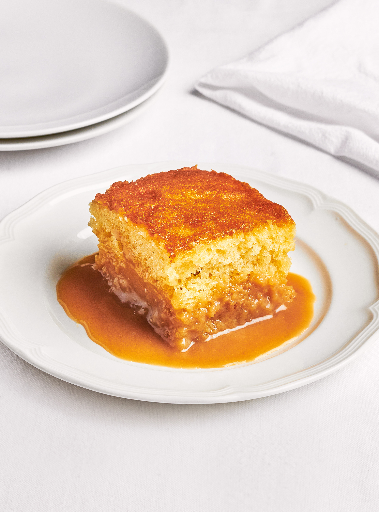

Unemployed man's pudding

Pouding chômeur (unemployed man's pudding)
is a dessert that was created during the early years of the Great Depression in Quebec, Canada.
The pouding chômeur is a basic cake batter onto which a hot syrup or caramel is poured before baking.
The cake then rises through the liquid which settles at the bottom of the pan, mixing with the batter
and creating a distinct layer at the bottom of the dish. The syrup or caramel can be made from brown sugar,
white sugar, maple syrup or a combination of these. During the worst of the Depression, stale bread was used
in lieu of cake batter.
Ingredients
Sauce
- 1 ¼ cups (310 ml) 35% cream
- 1 cup (250 ml) maple syrup
- 1/4 cup (55 g) brown sugar
Cake
- ¾ cup (115 g) unbleached all-purpose flour
- 1 tsp baking powder
- 1/8 tsp salt
- 6 tbsp (85 g) sugar
- 1/4 cup (60 ml) canola oil
- 1/2 tsp (2.5 ml) vanilla
- 1 egg
- 6 tbsp (90 ml) milk
Preparation
Sauce
- With the rack in the middle position, preheat the oven to 350°F (180°C).
- In a small pot, bring all of the ingredients to a boil while whisking. Simmer over medium heat for 5 minutes. Remove from the heat.
Cake
- In a bowl, combine the flour, baking powder and salt.
- In another bowl, whisk together the sugar, oil, vanilla and egg with an electric mixer. With the machine running on low speed, add the dry ingredients alternating with the milk. Spread the batter out in an 8-inch (20 cm) square pan. Delicately pour the sauce over the cake.
- Bake for 25 minutes or until a toothpick inserted in the centre of the cake comes out clean. Let cool on a wire rack.